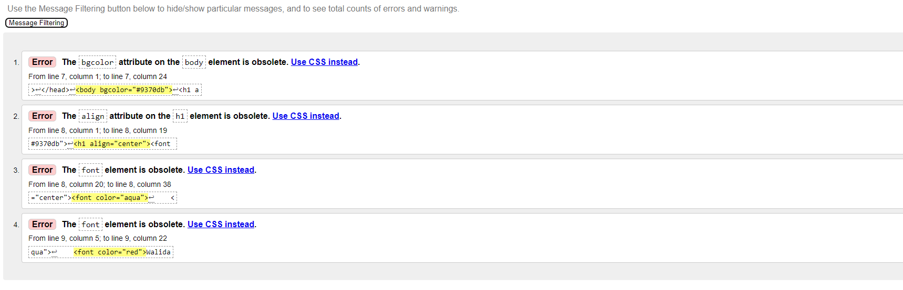
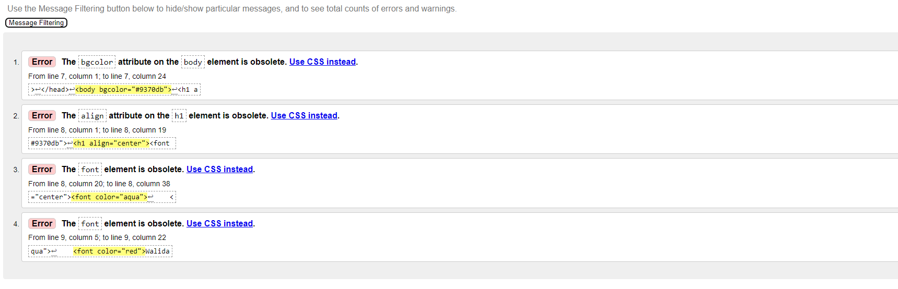

Walidacją nazywa się potwierdzenie poprzez dostarczenie obiektywnego dowodu spełnienia określonych wymagań odnośnie
do konkretnego użycia lub zastosowania. Technicznie metoda walidacji przyjmuje, że uzyskanie niezbędnego dowodu potwierdza,
iż określony plan okaże się skuteczny.

Używam tego programu:

wkleiłem swojego linku i zaczynam sprawdzać:
 Pokazało 4 błędy ale oni pochodzą z tąd że muszę używać CSS:

Pokazało 4 błędy ale oni pochodzą z tąd że muszę używać CSS:
